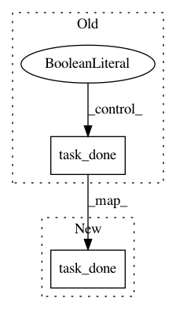

2f85c7fe83c831a41743b4aa67e94f4eb69cdb68,tmtoolkit/preprocess.py,_PreprocWorker,run,#_PreprocWorker#,309
Before Change
def run(self):
// print("worker %s running" % self.name)
while True:
next_task, task_kwargs = self.tasks_queue.get()
// print("worker %s got task `%s`" % (self.name, next_task))
if next_task is None: // a task of None means shutdown
self.tasks_queue.task_done()
break
exec_task_fn = getattr(self, "_task_" + next_task)
if exec_task_fn:
After Change
// print("worker %s has tokens from `%s`" % (self.name, list(self._tokens.keys())))
self.tasks_queue.task_done()
self.tasks_queue.task_done()
def load_tokenizer(self, custom_tokenizer):
self.tokenizer = custom_tokenizer
In pattern: SUPERPATTERN
Frequency: 3
Non-data size: 2
Instances
Project Name: WZBSocialScienceCenter/tmtoolkit
Commit Name: 2f85c7fe83c831a41743b4aa67e94f4eb69cdb68
Time: 2017-08-22
Author: markus.konrad@wzb.eu
File Name: tmtoolkit/preprocess.py
Class Name: _PreprocWorker
Method Name: run
Project Name: tryolabs/luminoth
Commit Name: b1481374beec45ec0fb1532a9e8243d76262ad24
Time: 2018-02-08
Author: javirey@gmail.com
File Name: luminoth/tools/dataset/readers/object_detection/openimages.py
Class Name: OpenImagesReader
Method Name: _complete_records
Project Name: tryolabs/luminoth
Commit Name: b1481374beec45ec0fb1532a9e8243d76262ad24
Time: 2018-02-08
Author: javirey@gmail.com
File Name: luminoth/tools/dataset/readers/object_detection/openimages.py
Class Name: OpenImagesReader
Method Name: iterate